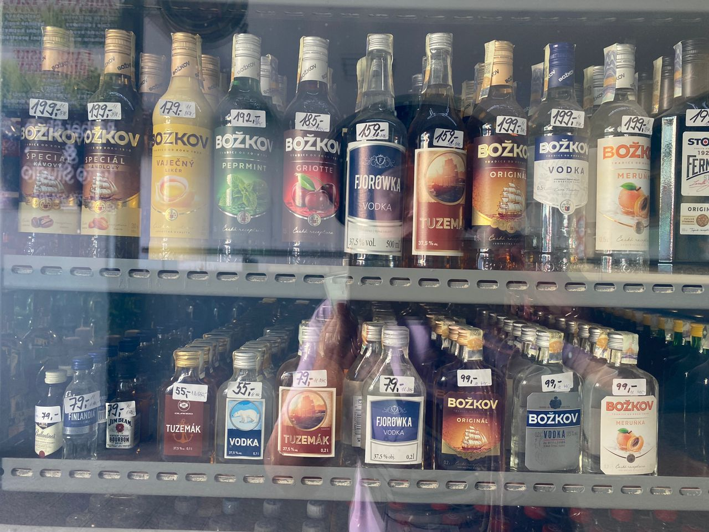

Real Story · 中文
Reached Czechia.
6 April 2024，我 reached Czechia。 那晚 overnight at Brno public paid parking slot， 前面还有 swimming pool。
7 April，我 overnight at Brno stadium free parking lot。 8 April and 9 April，我 overnight at Prague stadium free parking lot。
Currency Relief
从 Bulgaria 开始用 Euro，每一个 Euro 我都必须 x 5。
从 Bulgaria 开始，有些地方开始用到 Euro。 每一个 Euro 我都必须 x 5， 所以心里压力会比较大。
但到了 Czech Republic，看到 Czech koruna 的价格， 我可以除以 5。 例如 Vodka 55 Kč，除以 5，大概 RM11。 内心好过一点。
这不是要买不买的问题， 而是 long trip 的 money brain 会一直自动换算。 一个货币换成另一个货币，心情也会跟着变。

Prague Detail
Prague 的 KFC toilet 要 password 才能进。
到了 Prague，我发现 KFC 的 toilet 需要 password 才能进去。 这种小细节很 real： 每个城市都有自己的 daily rules。
Road life 不是只看大景点。 有时一个 toilet password，也会变成国家记忆的一部分。😅
English Memory Summary
Czechia opened through parking, prices, and a toilet password.
Tuzi reached Czech Republic on 6 April 2024 and overnighted at a paid public parking slot in Brno, near a swimming pool. On 7 April she stayed at Brno stadium free parking, then on 8 and 9 April at Prague stadium free parking.
After the Euro-zone mental burden of multiplying prices by five, Czech koruna felt easier: prices could be divided by five to estimate Malaysian ringgit. In Prague, even a KFC toilet password became a small real-life city memory.
Heart Statement
有些国家不是先用景点打开，而是用价格、停车和厕所密码打开。
Czechia opened with Brno parking, prices I could divide by five, and a Prague KFC toilet that needed a password.